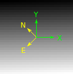
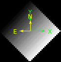

<!DOCTYPE html PUBLIC "-//W3C//DTD XHTML 1.0 Transitional//EN"
  "http://www.w3.org/TR/xhtml1/DTD/xhtml1-transitional.dtd">


<html xmlns="http://www.w3.org/1999/xhtml">
  <head>
    <meta http-equiv="Content-Type" content="text/html; charset=utf-8" />
    
    <title>interftools: module of interferometric tools &mdash; Python tools for the BeACoN group Beta documentation</title>
    
    <link rel="stylesheet" href="_static/default.css" type="text/css" />
    <link rel="stylesheet" href="_static/pygments.css" type="text/css" />
    
    <script type="text/javascript">
      var DOCUMENTATION_OPTIONS = {
        URL_ROOT:    './',
        VERSION:     'Beta',
        COLLAPSE_INDEX: false,
        FILE_SUFFIX: '.html',
        HAS_SOURCE:  true
      };
    </script>
    <script type="text/javascript" src="_static/jquery.js"></script>
    <script type="text/javascript" src="_static/underscore.js"></script>
    <script type="text/javascript" src="_static/doctools.js"></script>
    <script type="text/javascript" src="http://cdn.mathjax.org/mathjax/latest/MathJax.js?config=TeX-AMS-MML_HTMLorMML"></script>
    <link rel="top" title="Python tools for the BeACoN group Beta documentation" href="index.html" />
    <link rel="next" title="jdcal: auxiliary module to convert between calendars" href="jdcal.html" />
    <link rel="prev" title="input: module of Hdust input tools" href="input.html" /> 
  </head>
  <body>
    <div class="related">
      <h3>Navigation</h3>
      <ul>
        <li class="right" style="margin-right: 10px">
          <a href="genindex.html" title="General Index"
             accesskey="I">index</a></li>
        <li class="right" >
          <a href="py-modindex.html" title="Python Module Index"
             >modules</a> |</li>
        <li class="right" >
          <a href="jdcal.html" title="jdcal: auxiliary module to convert between calendars"
             accesskey="N">next</a> |</li>
        <li class="right" >
          <a href="input.html" title="input: module of Hdust input tools"
             accesskey="P">previous</a> |</li>
        <li><a href="index.html">Python tools for the BeACoN group Beta documentation</a> &raquo;</li> 
      </ul>
    </div>  

    <div class="document">
      <div class="documentwrapper">
        <div class="bodywrapper">
          <div class="body">
            
  <div class="section" id="module-pyhdust.interftools">
<span id="interftools-module-of-interferometric-tools"></span><h1><strong>interftools</strong>: module of interferometric tools<a class="headerlink" href="#module-pyhdust.interftools" title="Permalink to this headline">¶</a></h1>
<p>PyHdust <em>interftools</em> module: interferometry tools</p>
<p><cite>colors</cite> keep the <em>amdlib</em> standard.</p>
<p>A biblioteca python XDRLIB eh MUITO lenta... Usa muitas listas!!!</p>
<div class="highlight-python"><div class="highlight"><pre><span class="gp">&gt;&gt;&gt; </span><span class="kn">import</span> <span class="nn">xdrlib</span>
</pre></div>
</div>
<p>A biblioteca PYDAP estah em desenvolvimento... Eh complicada de usar</p>
<div class="highlight-python"><div class="highlight"><pre><span class="gp">&gt;&gt;&gt; </span><span class="kn">from</span> <span class="nn">pydap.model</span> <span class="kn">import</span> <span class="o">*</span>
<span class="gp">&gt;&gt;&gt; </span><span class="kn">from</span> <span class="nn">pydap.xdr</span> <span class="kn">import</span> <span class="n">DapUnpacker</span>
<span class="gp">&gt;&gt;&gt; </span><span class="n">base_int</span> <span class="o">=</span> <span class="n">BaseType</span><span class="p">(</span><span class="n">name</span><span class="o">=</span><span class="s">&#39;base_int&#39;</span><span class="p">)</span>
<span class="gp">&gt;&gt;&gt; </span><span class="n">base_float</span> <span class="o">=</span> <span class="n">BaseType</span><span class="p">(</span><span class="n">name</span><span class="o">=</span><span class="s">&#39;base_float&#39;</span><span class="p">,</span> <span class="nb">type</span><span class="o">=</span><span class="n">Float32</span><span class="p">)</span>
</pre></div>
</div>
<p>Todas as leituras binarias baseiam-se no struct.</p>
<ul class="simple">
<li>Rotines based on images (np.array matrix)</li>
<li>Rotines based on oifiles</li>
<li>Rotines based on HDUST (maps/data)</li>
<li>Other?</li>
</ul>
<table class="docutils field-list" frame="void" rules="none">
<col class="field-name" />
<col class="field-body" />
<tbody valign="top">
<tr class="field-odd field"><th class="field-name">license:</th><td class="field-body">GNU GPL v3.0 <a class="reference external" href="https://github.com/danmoser/pyhdust/blob/master/LICENSE">https://github.com/danmoser/pyhdust/blob/master/LICENSE</a></td>
</tr>
</tbody>
</table>
<dl class="class">
<dt id="pyhdust.interftools.Disk">
<em class="property">class </em><tt class="descclassname">pyhdust.interftools.</tt><tt class="descname">Disk</tt><big>(</big><em>lbd=[0.001], barz2=1.0, Td=12120.0, fion=1.0, mu=0.5, gb=None, rho=2.8e-11</em><big>)</big><a class="reference internal" href="_modules/pyhdust/interftools.html#Disk"><span class="viewcode-link">[source]</span></a><a class="headerlink" href="#pyhdust.interftools.Disk" title="Permalink to this definition">¶</a></dt>
<dd><p>To compute Vieira&#8217;s models.</p>
<p><cite>lbd</cite> in cm (np.array. If None, default value from _phc.BBlbd), <cite>barz2</cite> is 
the mean value of the square atomic number, <cite>Td</cite> isothermal disk 
temperature, <cite>fion</cite> is the ionization fraction, mu (<span class="math">\(\mu\)</span>) is the 
mean particle weight (mH units), <cite>gb</cite> is the...</p>
<p><cite>Ms</cite> is the stellar mass (Msun).</p>
<dl class="method">
<dt id="pyhdust.interftools.Disk.update">
<tt class="descname">update</tt><big>(</big><big>)</big><a class="reference internal" href="_modules/pyhdust/interftools.html#Disk.update"><span class="viewcode-link">[source]</span></a><a class="headerlink" href="#pyhdust.interftools.Disk.update" title="Permalink to this definition">¶</a></dt>
<dd><p>Opacity expression from Brussaard &amp; van de Hulst (1962)</p>
</dd></dl>

</dd></dl>

<dl class="function">
<dt id="pyhdust.interftools.I">
<tt class="descclassname">pyhdust.interftools.</tt><tt class="descname">I</tt><big>(</big><em>Disk</em>, <em>Ms=7.7</em>, <em>Teff=20200.0</em>, <em>Rs=4.94</em>, <em>iang=0.0</em>, <em>bm2n=-5.5</em>, <em>fmin=0.005</em>, <em>Rmax=None</em>, <em>px=128</em>, <em>bartau=None</em><big>)</big><a class="reference internal" href="_modules/pyhdust/interftools.html#I"><span class="viewcode-link">[source]</span></a><a class="headerlink" href="#pyhdust.interftools.I" title="Permalink to this definition">¶</a></dt>
<dd><p>I is the specific intensity of the star plus an isothermal disk. The 
effects of limb-darkening, stellar rotation and circumstellar extinction 
are neglected. Image constructed from LOWER origin.</p>
<p>Disk: <cite>lbd</cite> is determined in Disk (lambda vector in cm).</p>
<p><cite>Teff</cite> is the stellar effective temperature (K). All derived quantities are 
based on this value, but the stellar emission, that is corrected by the 
<cite>fBBcor</cite> function.</p>
<p><cite>Rs</cite>, the stellar (equatorial) radius (Rsun).</p>
<p><cite>iang</cite>, inclination angle (deg).</p>
<p><cite>bm2n</cite> is the <span class="math">\(-2n+eta &lt; 0\)</span> value.</p>
<p><cite>fmin</cite>, minimum flux at the semi-major axis as fraction of the thick disk 
flux.</p>
<p><cite>Rmax</cite>, maximum radius of the images.</p>
<p>METHOD: If <cite>Rmax</cite> is None, then Rmax of the image is automatically 
calculated where Athin is equal to <cite>fmin * BBlbd(Tdisk)</cite> at the longest 
(vector last position) wavelength. Else, the <cite>Rmax</cite> value is taken.
<cite>Rmax</cite> goes to all wavelengths.</p>
<p><cite>px</cite>, image side in pixels (squared output).</p>
<p><cite>bartau</cite> = if None, 1.3 is considered. Otherwise, it is a vector with same 
dimensions of <cite>Disk.lbd</cite>. See that <cite>bartau</cite> do not changes the 
emission in Eq. 12(c, Vieira+2015).</p>
<p>OUTPUT: (squared) images(len(lbd), px, px). The flux unit per pixel is 
<cite>BBlbd(Teff*fBBcor(Teff))</cite> (cgs), in an area of pixelsize**2. 
(<cite>pixelsize</cite> info is printed).</p>
</dd></dl>

<dl class="function">
<dt id="pyhdust.interftools.data2fitscube">
<tt class="descclassname">pyhdust.interftools.</tt><tt class="descname">data2fitscube</tt><big>(</big><em>data</em>, <em>obs</em>, <em>lbdc</em>, <em>xmax</em>, <em>dist</em>, <em>zoom=0</em>, <em>outname='model'</em>, <em>orient=0.0</em>, <em>rot=0.0</em>, <em>lum=0.0</em>, <em>coordsinf=None</em>, <em>map=False</em>, <em>deg=False</em><big>)</big><a class="reference internal" href="_modules/pyhdust/interftools.html#data2fitscube"><span class="viewcode-link">[source]</span></a><a class="headerlink" href="#pyhdust.interftools.data2fitscube" title="Permalink to this definition">¶</a></dt>
<dd><p>Export a set of images (e.g., data[zoom,obs,:,:,:]) to the fits cube
format.</p>
<p><cite>map</cite> = if <cite>data</cite> is a <a href="#id1"><span class="problematic" id="id2">*</span></a>.map file, set it to True. Leave false to <a href="#id3"><span class="problematic" id="id4">*</span></a>.maps.</p>
<p><cite>lbdc</cite> is the wavelength array and the dimension is kept as it is. It must
be in meters for JMMC softwares (ASPRO2/LITPRO).</p>
<p><cite>rot</cite> = rotation angle to be applied to the images. &#8216;x&#8217; and &#8216;y&#8217; coordinate
axes should be orientated with equatorial north corresponding to &#8216;up&#8217; (and
east == &#8216;left&#8217;). Units in Degrees.</p>
<p><cite>orient</cite> = orientation of the coordinate system. This is completely
independent of the <cite>rot</cite> variable.</p>
<p><cite>lum</cite> = luminosity given in Solar units.
BUNIT sets the units of the image. Considering that HDUST images
give the pixels counts as <span class="math">\(F_\lambda/F\)</span>, the same correction as done
to BeAtlas is performed, and the final results are in 10^-17
erg/s/cm^2/Ang. If <cite>lum</cite> = 0, no change is done.</p>
<p><cite>coordsinf</cite> = [RA,DEC].
Example: [&#8216;21:51:12.055&#8217;, &#8216;+28:51:38.72&#8217;]</p>
<p><cite>deg</cite> = angles in degrees (instead of radians).</p>
</dd></dl>

<dl class="function">
<dt id="pyhdust.interftools.dataphot">
<tt class="descclassname">pyhdust.interftools.</tt><tt class="descname">dataphot</tt><big>(</big><em>data</em>, <em>lbdc</em>, <em>xmax</em>, <em>im=0</em>, <em>obs=0</em>, <em>iflx=0</em>, <em>dist=10</em>, <em>PA=0.0</em>, <em>B=100.0</em>, <em>PAdisk=90.0</em>, <em>quiet=False</em>, <em>diff=True</em>, <em>phiunit=True</em><big>)</big><a class="reference internal" href="_modules/pyhdust/interftools.html#dataphot"><span class="viewcode-link">[source]</span></a><a class="headerlink" href="#pyhdust.interftools.dataphot" title="Permalink to this definition">¶</a></dt>
<dd><p>Return photocenter positions for a given <cite>hdust</cite> data file.</p>
<p>If <a href="#id5"><span class="problematic" id="id6">*</span></a>.map file format, it takes <cite>iflx</cite> image layer.</p>
<p>input: data (np.ndarray), <cite>dist</cite> (float, parsecs)</p>
<p>output: lbdc, V2, DP (float arrays)</p>
</dd></dl>

<dl class="function">
<dt id="pyhdust.interftools.datinterf">
<tt class="descclassname">pyhdust.interftools.</tt><tt class="descname">datinterf</tt><big>(</big><em>data</em>, <em>lbdc</em>, <em>xmax</em>, <em>im=0</em>, <em>obs=0</em>, <em>iflx=0</em>, <em>dist=10</em>, <em>PA=0.0</em>, <em>B=100.0</em>, <em>PAdisk=90.0</em>, <em>quiet=False</em>, <em>normV2=False</em><big>)</big><a class="reference internal" href="_modules/pyhdust/interftools.html#datinterf"><span class="viewcode-link">[source]</span></a><a class="headerlink" href="#pyhdust.interftools.datinterf" title="Permalink to this definition">¶</a></dt>
<dd><p>Return Squared Visibilities (V2) and Diferential Phases (DP) for a given
<cite>hdust</cite> data file.</p>
<p>If <a href="#id7"><span class="problematic" id="id8">*</span></a>.map file format, it takes <cite>iflx</cite> image layer.</p>
<p>input: data (np.ndarray), <cite>dist</cite> (float, parsecs)</p>
<p>output: lbdc, V2, DP (float arrays)</p>
</dd></dl>

<dl class="function">
<dt id="pyhdust.interftools.fastnumvis">
<tt class="descclassname">pyhdust.interftools.</tt><tt class="descname">fastnumvis</tt><big>(</big><em>img</em>, <em>lbd</em>, <em>Bproj</em>, <em>PA</em>, <em>rad_per_pixel</em>, <em>PAdisk=90.0</em><big>)</big><a class="reference internal" href="_modules/pyhdust/interftools.html#fastnumvis"><span class="viewcode-link">[source]</span></a><a class="headerlink" href="#pyhdust.interftools.fastnumvis" title="Permalink to this definition">¶</a></dt>
<dd><dl class="docutils">
<dt>For a given image (in phys.units = <cite>rad_per_pixel</cite>) and a interf. setup,</dt>
<dd>it returns the visibility and phase.</dd>
</dl>
<p><cite>PA</cite> and <cite>PAdisk</cite> in degrees.</p>
<p><cite>Bproj</cite> and <cite>lbd</cite> must have the same units (m).</p>
<p>output: complexVis, VisAmp, VisPhase</p>
</dd></dl>

<dl class="function">
<dt id="pyhdust.interftools.fastnumvis3">
<tt class="descclassname">pyhdust.interftools.</tt><tt class="descname">fastnumvis3</tt><big>(</big><em>img</em>, <em>lbd</em>, <em>Bprojs</em>, <em>PAs</em>, <em>rad_per_pixel</em>, <em>PAdisk=90.0</em><big>)</big><a class="reference internal" href="_modules/pyhdust/interftools.html#fastnumvis3"><span class="viewcode-link">[source]</span></a><a class="headerlink" href="#pyhdust.interftools.fastnumvis3" title="Permalink to this definition">¶</a></dt>
<dd><p>For a given image (in phys.units = <cite>rad_per_pixel</cite>) and 3 telescopes
interferometric setup, it returns the visibility and closure phase.</p>
<p>Is</p>
<p><cite>PA</cite> as array/list (two values) and <cite>PAdisk</cite> in degrees.</p>
<p><cite>Bproj</cite> as array/list (two values) and <cite>lbd</cite> must have the same units (m).</p>
<p>output: complexVis, VisAmp, VisPhase (closure phase)</p>
</dd></dl>

<dl class="function">
<dt id="pyhdust.interftools.img2fits">
<tt class="descclassname">pyhdust.interftools.</tt><tt class="descname">img2fits</tt><big>(</big><em>img</em>, <em>lbd</em>, <em>xmax</em>, <em>dist</em>, <em>outname='model'</em>, <em>rot=0.0</em>, <em>lum=0.0</em>, <em>orient=0.0</em>, <em>coordsinf=None</em>, <em>deg=False</em>, <em>ulbd=''</em><big>)</big><a class="reference internal" href="_modules/pyhdust/interftools.html#img2fits"><span class="viewcode-link">[source]</span></a><a class="headerlink" href="#pyhdust.interftools.img2fits" title="Permalink to this definition">¶</a></dt>
<dd><p>Export an image (e.g., data[0,0,0,:,:]) to the fits format.</p>
<p><cite>lbd</cite> is the wavelength value and the dimension is kept as it is. It must
be in meters for JMMC softwares (ASPRO2/LITPRO).</p>
<p><cite>ulbd</cite> units of the lbd.</p>
<p><cite>rot</cite> = rotation angle to be applied to the images. &#8216;x&#8217; and &#8216;y&#8217; coordinate
axes should be orientated with equatorial north corresponding to &#8216;up&#8217; (and
east == &#8216;left&#8217;). Units according to <cite>deg</cite> bool.</p>
<p><cite>orient</cite> = orientation of the coordinate system. This is completely
independent of the <cite>rot</cite> variable. Units according to <cite>deg</cite> bool.</p>
<p><cite>lum</cite> = luminosity given in Solar units.
BUNIT sets the units of the image. Considering that HDUST images
give the pixels counts as <span class="math">\(F_\lambda/F\)</span>, the same correction as done
to BeAtlas is performed, and the final results are in 10^-17
erg/s/cm^2/Ang. If <cite>lum</cite> = 0, no change is done.</p>
<p><cite>coordsinf</cite> = [RA,DEC], as [&#8216;21:51:12.055&#8217;, &#8216;+28:51:38.72&#8217;]</p>
<p><cite>deg</cite> = angles in degrees (instead of radians).</p>
<p>Example: image at 21 cm, rotated 45 degrees, 2 AU long at 10 parsecs.</p>
<div class="highlight-python"><div class="highlight"><pre><span class="n">img</span> <span class="o">=</span> <span class="n">np</span><span class="o">.</span><span class="n">arange</span><span class="p">(</span><span class="mi">900</span><span class="p">)</span><span class="o">.</span><span class="n">reshape</span><span class="p">((</span><span class="mi">30</span><span class="p">,</span><span class="mi">30</span><span class="p">))</span>

<span class="n">intt</span><span class="o">.</span><span class="n">img2fits</span><span class="p">(</span><span class="n">img</span><span class="p">,</span> <span class="mf">21.</span><span class="p">,</span> <span class="p">[</span><span class="mi">2</span><span class="o">*</span><span class="n">phc</span><span class="o">.</span><span class="n">au</span><span class="o">.</span><span class="n">cgs</span><span class="o">/</span><span class="n">phc</span><span class="o">.</span><span class="n">Rsun</span><span class="o">.</span><span class="n">cgs</span><span class="p">],</span> <span class="mi">10</span><span class="p">,</span> <span class="n">orient</span><span class="o">=</span><span class="mf">45.</span><span class="p">,</span>
<span class="n">coordsinf</span><span class="o">=</span><span class="p">[</span><span class="s">&#39;21:51:12.055&#39;</span><span class="p">,</span> <span class="s">&#39;-28:51:38.72&#39;</span><span class="p">],</span> <span class="n">ulbd</span><span class="o">=</span><span class="s">&#39;cm&#39;</span><span class="p">,</span> <span class="n">deg</span><span class="o">=</span><span class="bp">True</span><span class="p">)</span>
</pre></div>
</div>

<div class="highlight-python"><div class="highlight"><pre><span class="n">intt</span><span class="o">.</span><span class="n">img2fits</span><span class="p">(</span><span class="n">img</span><span class="p">,</span> <span class="mf">21.</span><span class="p">,</span> <span class="p">[</span><span class="mi">2</span><span class="o">*</span><span class="n">phc</span><span class="o">.</span><span class="n">au</span><span class="o">.</span><span class="n">cgs</span><span class="o">/</span><span class="n">phc</span><span class="o">.</span><span class="n">Rsun</span><span class="o">.</span><span class="n">cgs</span><span class="p">],</span> <span class="mi">10</span><span class="p">,</span> <span class="n">rot</span><span class="o">=</span><span class="mf">45.</span><span class="p">,</span>
<span class="n">coordsinf</span><span class="o">=</span><span class="p">[</span><span class="s">&#39;21:51:12.055&#39;</span><span class="p">,</span> <span class="s">&#39;-28:51:38.72&#39;</span><span class="p">],</span> <span class="n">ulbd</span><span class="o">=</span><span class="s">&#39;cm&#39;</span><span class="p">,</span> <span class="n">deg</span><span class="o">=</span><span class="bp">True</span><span class="p">,</span>
<span class="n">outname</span><span class="o">=</span><span class="s">&#39;model_rotated&#39;</span><span class="p">)</span>
</pre></div>
</div>

</dd></dl>

<dl class="function">
<dt id="pyhdust.interftools.imshowl">
<tt class="descclassname">pyhdust.interftools.</tt><tt class="descname">imshowl</tt><big>(</big><em>img</em>, <em>cmap='gist_heat'</em>, <em>origin='lower'</em><big>)</big><a class="reference internal" href="_modules/pyhdust/interftools.html#imshowl"><span class="viewcode-link">[source]</span></a><a class="headerlink" href="#pyhdust.interftools.imshowl" title="Permalink to this definition">¶</a></dt>
<dd><p>Plot the normalized image in log-scale.</p>
</dd></dl>

<dl class="function">
<dt id="pyhdust.interftools.log_transform">
<tt class="descclassname">pyhdust.interftools.</tt><tt class="descname">log_transform</tt><big>(</big><em>im</em><big>)</big><a class="reference internal" href="_modules/pyhdust/interftools.html#log_transform"><span class="viewcode-link">[source]</span></a><a class="headerlink" href="#pyhdust.interftools.log_transform" title="Permalink to this definition">¶</a></dt>
<dd><p>Returns log(image) scaled to the interval [0,1]</p>
</dd></dl>

<dl class="function">
<dt id="pyhdust.interftools.mapinterf">
<tt class="descclassname">pyhdust.interftools.</tt><tt class="descname">mapinterf</tt><big>(</big><em>modf</em>, <em>im=0</em>, <em>obs=0</em>, <em>iflx=0</em>, <em>dist=10</em>, <em>PA=0.0</em>, <em>B=100.0</em>, <em>PAdisk=90.0</em>, <em>quiet=False</em><big>)</big><a class="reference internal" href="_modules/pyhdust/interftools.html#mapinterf"><span class="viewcode-link">[source]</span></a><a class="headerlink" href="#pyhdust.interftools.mapinterf" title="Permalink to this definition">¶</a></dt>
<dd><p>Return Squared Visibilities (V2) and Diferential Phases (DP) for a given
<cite>hdust</cite> map(s) file.</p>
<p>If <a href="#id9"><span class="problematic" id="id10">*</span></a>.map file format, it takes <cite>iflx</cite> image layer.</p>
<p>input: <a href="#id11"><span class="problematic" id="id12">*</span></a>.map(s) path (string), <cite>dist</cite> (float, parsecs)</p>
<p>output: lbdc, V2, DP (float arrays)</p>
</dd></dl>

<dl class="class">
<dt id="pyhdust.interftools.oiClass">
<em class="property">class </em><tt class="descclassname">pyhdust.interftools.</tt><tt class="descname">oiClass</tt><big>(</big><em>oitype</em>, <em>oifile=None</em><big>)</big><a class="reference internal" href="_modules/pyhdust/interftools.html#oiClass"><span class="viewcode-link">[source]</span></a><a class="headerlink" href="#pyhdust.interftools.oiClass" title="Permalink to this definition">¶</a></dt>
<dd><p>PyHdust class for interferometric data.</p>
<dl class="method">
<dt id="pyhdust.interftools.oiClass.add_model">
<tt class="descname">add_model</tt><big>(</big><em>imgs</em>, <em>rpx</em>, <em>PAdisk=90</em>, <em>oifile=None</em>, <em>lbm=None</em><big>)</big><a class="reference internal" href="_modules/pyhdust/interftools.html#oiClass.add_model"><span class="viewcode-link">[source]</span></a><a class="headerlink" href="#pyhdust.interftools.oiClass.add_model" title="Permalink to this definition">¶</a></dt>
<dd><p>Fill the class with modeled values from observational setup already
read.</p>
<p><tt class="docutils literal"><span class="pre">imgs</span></tt> is and matrix(lb, n, m), where lb is the lambda dimension (
optional). <tt class="docutils literal"><span class="pre">rpx</span></tt> is radians_per_pixel.</p>
</dd></dl>

<dl class="method">
<dt id="pyhdust.interftools.oiClass.clear">
<tt class="descname">clear</tt><big>(</big><big>)</big><a class="reference internal" href="_modules/pyhdust/interftools.html#oiClass.clear"><span class="viewcode-link">[source]</span></a><a class="headerlink" href="#pyhdust.interftools.oiClass.clear" title="Permalink to this definition">¶</a></dt>
<dd><p>Clear observational info to be used by a model</p>
</dd></dl>

</dd></dl>

<dl class="function">
<dt id="pyhdust.interftools.plot_oifits">
<tt class="descclassname">pyhdust.interftools.</tt><tt class="descname">plot_oifits</tt><big>(</big><em>oidata, ffile='last_run', fmt=['png'], xrange=None, legend=True</em><big>)</big><a class="reference internal" href="_modules/pyhdust/interftools.html#plot_oifits"><span class="viewcode-link">[source]</span></a><a class="headerlink" href="#pyhdust.interftools.plot_oifits" title="Permalink to this definition">¶</a></dt>
<dd><p>Standard observational log for AMBER</p>
<p>If the file starts with &#8220;<a href="#id13"><span class="problematic" id="id14">PRODUCT_</span></a>&#8221;, it searchs for the specs in the &#8220;AVG&#8221;
folder.</p>
<p>(One could write this info into the fits file. Since I&#8217;ve only tested the
reading features of the <cite>oifits</cite> routine, I prefered do it this way).</p>
</dd></dl>

<dl class="function">
<dt id="pyhdust.interftools.plot_phi3_res">
<tt class="descclassname">pyhdust.interftools.</tt><tt class="descname">plot_phi3_res</tt><big>(</big><em>ax, ax2, oidata, colors, names, modfiles, obsdeg=None, dist=None, xlim=None, PAs=[-180, 180], PAsrev=False, PArv=[0, 0], bindata=0, quiet=False, alp=0.75, printsum=False</em><big>)</big><a class="reference internal" href="_modules/pyhdust/interftools.html#plot_phi3_res"><span class="viewcode-link">[source]</span></a><a class="headerlink" href="#pyhdust.interftools.plot_phi3_res" title="Permalink to this definition">¶</a></dt>
<dd><p>modfiles = models!</p>
<p><cite>bindata</cite> refers to vis2.wavelength.eff_wave!! In other words: the binning
only works on simultaneous observations with different <span class="math">\(\lambda\)</span>.</p>
</dd></dl>

<dl class="function">
<dt id="pyhdust.interftools.plot_pio_res">
<tt class="descclassname">pyhdust.interftools.</tt><tt class="descname">plot_pio_res</tt><big>(</big><em>oidata, modellist, outname=None, fmt=['png'], legend=True, obsdeg=[60.6], distpc=42.75, quiet=False, xlim=None, bindata=0, PAs=[-180, 180], PAsrev=True, shv2sum=False</em><big>)</big><a class="reference internal" href="_modules/pyhdust/interftools.html#plot_pio_res"><span class="viewcode-link">[source]</span></a><a class="headerlink" href="#pyhdust.interftools.plot_pio_res" title="Permalink to this definition">¶</a></dt>
<dd><p>Obs-Model comparison for PIONIER</p>
<p><cite>legend</cite>: ?</p>
<p><cite>obsdeg</cite>: ?</p>
<p><cite>bindata</cite>: ?</p>
<p><cite>PArev</cite>: Plot the reverse of the observed PAs</p>
<p><cite>shv2sum</cite>: ?</p>
</dd></dl>

<dl class="function">
<dt id="pyhdust.interftools.plot_pionier">
<tt class="descclassname">pyhdust.interftools.</tt><tt class="descname">plot_pionier</tt><big>(</big><em>loic, oitype='PIO', outname=None, legend=True, PAs=[-180, 180], fmt=['png'], lcor=None, lmk=None</em><big>)</big><a class="reference internal" href="_modules/pyhdust/interftools.html#plot_pionier"><span class="viewcode-link">[source]</span></a><a class="headerlink" href="#pyhdust.interftools.plot_pionier" title="Permalink to this definition">¶</a></dt>
<dd><p>Plot a OIFITS files with VIS2 and CP information.</p>
<p><tt class="docutils literal"><span class="pre">loic</span></tt> is a list of oic classes.</p>
<p>Only the first <tt class="docutils literal"><span class="pre">loi</span></tt> will have the <em>uv</em> plane coverage plotted.</p>
<p>If <tt class="docutils literal"><span class="pre">PAs</span> <span class="pre">!=</span> <span class="pre">[-180,</span> <span class="pre">180]</span></tt>, then a limited range of PAs will be plotted.</p>
</dd></dl>

<dl class="function">
<dt id="pyhdust.interftools.plot_pionier_old">
<tt class="descclassname">pyhdust.interftools.</tt><tt class="descname">plot_pionier_old</tt><big>(</big><em>oidata, ffile='last_run', fmt=['png'], legend=True, model=None, obs=None, dist=None</em><big>)</big><a class="reference internal" href="_modules/pyhdust/interftools.html#plot_pionier_old"><span class="viewcode-link">[source]</span></a><a class="headerlink" href="#pyhdust.interftools.plot_pionier_old" title="Permalink to this definition">¶</a></dt>
<dd><p>Standard observational log for PIONIER</p>
<p>obs is a list
dist is a number</p>
</dd></dl>

<dl class="function">
<dt id="pyhdust.interftools.plot_pionier_res">
<tt class="descclassname">pyhdust.interftools.</tt><tt class="descname">plot_pionier_res</tt><big>(</big><em>oidata, model, outname=None, fmt=['png'], legend=True, obs=None, dist=42.75, quiet=True, xlim=None, bindata=0, PArange=[-180, 180], PArr=True, shv2sum=False</em><big>)</big><a class="reference internal" href="_modules/pyhdust/interftools.html#plot_pionier_res"><span class="viewcode-link">[source]</span></a><a class="headerlink" href="#pyhdust.interftools.plot_pionier_res" title="Permalink to this definition">¶</a></dt>
<dd><p>Obs-Model comparison for PIONIER</p>
<p>model, obs are lists
dist is a number
<cite>PArange</cite> is in deg., from -180 to 180.</p>
</dd></dl>

<dl class="function">
<dt id="pyhdust.interftools.plot_t3_img">
<tt class="descclassname">pyhdust.interftools.</tt><tt class="descname">plot_t3_img</tt><big>(</big><em>ax</em>, <em>oidata</em>, <em>img</em>, <em>xlim=None</em>, <em>quiet=False</em>, <em>alp=0.75</em><big>)</big><a class="reference internal" href="_modules/pyhdust/interftools.html#plot_t3_img"><span class="viewcode-link">[source]</span></a><a class="headerlink" href="#pyhdust.interftools.plot_t3_img" title="Permalink to this definition">¶</a></dt>
<dd><p>IMG from LitPRO</p>
<p>TODO: scales</p>
</dd></dl>

<dl class="function">
<dt id="pyhdust.interftools.plot_uv_old">
<tt class="descclassname">pyhdust.interftools.</tt><tt class="descname">plot_uv_old</tt><big>(</big><em>ax, oidata, colors, names, PAs=[-180, 180], PAsrev=False, PArv=[0, 0], xlim=None</em><big>)</big><a class="reference internal" href="_modules/pyhdust/interftools.html#plot_uv_old"><span class="viewcode-link">[source]</span></a><a class="headerlink" href="#pyhdust.interftools.plot_uv_old" title="Permalink to this definition">¶</a></dt>
<dd><p>Plot uv map of a given oidata.vis</p>
</dd></dl>

<dl class="function">
<dt id="pyhdust.interftools.plot_v2_img">
<tt class="descclassname">pyhdust.interftools.</tt><tt class="descname">plot_v2_img</tt><big>(</big><em>ax</em>, <em>oidata</em>, <em>img</em>, <em>xlim=None</em>, <em>quiet=False</em>, <em>alp=0.75</em><big>)</big><a class="reference internal" href="_modules/pyhdust/interftools.html#plot_v2_img"><span class="viewcode-link">[source]</span></a><a class="headerlink" href="#pyhdust.interftools.plot_v2_img" title="Permalink to this definition">¶</a></dt>
<dd><p>IMG from LitPRO</p>
<p>TODO: scales</p>
</dd></dl>

<dl class="function">
<dt id="pyhdust.interftools.plot_v2_res">
<tt class="descclassname">pyhdust.interftools.</tt><tt class="descname">plot_v2_res</tt><big>(</big><em>ax, ax2, oidata, colors, names, modfiles, obsdeg=None, dist=None, xlim=None, PAs=[-180, 180], PAsrev=False, PArv=[0, 0], bindata=0, quiet=False, alp=0.75, printsum=False</em><big>)</big><a class="reference internal" href="_modules/pyhdust/interftools.html#plot_v2_res"><span class="viewcode-link">[source]</span></a><a class="headerlink" href="#pyhdust.interftools.plot_v2_res" title="Permalink to this definition">¶</a></dt>
<dd><p>datas = models!</p>
<p><cite>bindata</cite> refers to vis2.wavelength.eff_wave!! In other words: the binning
only works on simultaneous observations with different <span class="math">\(\lambda\)</span>.</p>
</dd></dl>

<dl class="function">
<dt id="pyhdust.interftools.printinfo">
<tt class="descclassname">pyhdust.interftools.</tt><tt class="descname">printinfo</tt><big>(</big><em>file</em>, <em>extract=False</em><big>)</big><a class="reference internal" href="_modules/pyhdust/interftools.html#printinfo"><span class="viewcode-link">[source]</span></a><a class="headerlink" href="#pyhdust.interftools.printinfo" title="Permalink to this definition">¶</a></dt>
<dd><p>Print AMBER OIFITS observational info.</p>
<p>If <cite>extract</cite> is False, output is:
- DATE-OBS, MJD, Target, B1, PA1, B2, PA2, B3, PA3.</p>
<p>If True, output is:
- [DATE-OBS, MJD, Target, B1, PA1, B2, PA2, B3, PA3], WAVE, DPlist, V2list</p>
<p>Where, DPlist = [DP1, eDP1, DP2, eDP2, DP3, eDP3] and V2list = [V2_1, 
eV2_1, V2_2, eV2_2, V2_3, eV2_3].</p>
</dd></dl>

<dl class="function">
<dt id="pyhdust.interftools.readmap">
<tt class="descclassname">pyhdust.interftools.</tt><tt class="descname">readmap</tt><big>(</big><em>file</em>, <em>quiet=False</em><big>)</big><a class="reference internal" href="_modules/pyhdust/interftools.html#readmap"><span class="viewcode-link">[source]</span></a><a class="headerlink" href="#pyhdust.interftools.readmap" title="Permalink to this definition">¶</a></dt>
<dd><p>Read <em>Hdust</em> MAP or MAPS files.</p>
<p><cite>mapimg</cite>: extract this component from the <em>.map</em> file.</p>
<blockquote>
<div><ul class="simple">
<li>0 = total flux</li>
<li>1 = transmitted flux</li>
<li>2 = scattered flux</li>
<li>3 = emitted flux</li>
<li>4 = pol. <em>Q</em> flux</li>
<li>5 = pol. <em>U</em> flux</li>
<li>6 = pol. <em>V</em> flux</li>
</ul>
</div></blockquote>
<p>OUTPUT = data, obslist, lbdc, Ra, xmax</p>
<blockquote>
<div><ul class="simple">
<li>data = image matrix</li>
<li>obslist = observers info (<em>i</em>, <span class="math">\(\phi\)</span>)</li>
<li>lbdc = central <span class="math">\(\lambda\)</span></li>
<li>Ra = ?</li>
<li>xmax = image size in Rsun untis</li>
</ul>
</div></blockquote>
<div class="line-block">
<div class="line">data(nimgs,nobs,nlbd,ny,nx,dfact)</div>
<div class="line">.map, dfact = 6</div>
<div class="line">.maps, dfact = 1</div>
</div>
</dd></dl>

<dl class="function">
<dt id="pyhdust.interftools.readoifits">
<tt class="descclassname">pyhdust.interftools.</tt><tt class="descname">readoifits</tt><big>(</big><em>oifile</em>, <em>oitype='PIO'</em><big>)</big><a class="reference internal" href="_modules/pyhdust/interftools.html#readoifits"><span class="viewcode-link">[source]</span></a><a class="headerlink" href="#pyhdust.interftools.readoifits" title="Permalink to this definition">¶</a></dt>
<dd><p>Read the oifits files/oidata according to its oitype.</p>
<p>Possible oitypes=[&#8220;PIO&#8221;, &#8220;AMB&#8221;]</p>
</dd></dl>

<dl class="function">
<dt id="pyhdust.interftools.reversePAs">
<tt class="descclassname">pyhdust.interftools.</tt><tt class="descname">reversePAs</tt><big>(</big><em>PAs=[-180, 180]</em><big>)</big><a class="reference internal" href="_modules/pyhdust/interftools.html#reversePAs"><span class="viewcode-link">[source]</span></a><a class="headerlink" href="#pyhdust.interftools.reversePAs" title="Permalink to this definition">¶</a></dt>
<dd><p>Calculte the reverse of the PAs input range.</p>
<p>OUTPUT: PArv (list, units deg)</p>
</dd></dl>

<dl class="function">
<dt id="pyhdust.interftools.setspacecoords">
<tt class="descclassname">pyhdust.interftools.</tt><tt class="descname">setspacecoords</tt><big>(</big><em>nx</em>, <em>ny</em>, <em>rad_per_pixel</em>, <em>xc=0.0</em>, <em>yc=0.0</em><big>)</big><a class="reference internal" href="_modules/pyhdust/interftools.html#setspacecoords"><span class="viewcode-link">[source]</span></a><a class="headerlink" href="#pyhdust.interftools.setspacecoords" title="Permalink to this definition">¶</a></dt>
<dd><p>return xx and yy, 2D physical coordinates in ANGULAR dimensions
(unit = defined by &#8216;rad_per_pixel&#8217;, i.e., radians).
The physical scale (or length) on both axis must be the same.</p>
<p>xc and yc are the the center position in PIXELS</p>
</dd></dl>

<dl class="function">
<dt id="pyhdust.interftools.t3_plot_ax">
<tt class="descclassname">pyhdust.interftools.</tt><tt class="descname">t3_plot_ax</tt><big>(</big><em>ax, oic, PAs=[-180, 180], cor='k', mk='o'</em><big>)</big><a class="reference internal" href="_modules/pyhdust/interftools.html#t3_plot_ax"><span class="viewcode-link">[source]</span></a><a class="headerlink" href="#pyhdust.interftools.t3_plot_ax" title="Permalink to this definition">¶</a></dt>
<dd><p>Axis plot of t3</p>
</dd></dl>

<dl class="function">
<dt id="pyhdust.interftools.uv_plot_ax">
<tt class="descclassname">pyhdust.interftools.</tt><tt class="descname">uv_plot_ax</tt><big>(</big><em>ax, oic, PAs=[-180, 180], legend=True, lbd=False</em><big>)</big><a class="reference internal" href="_modules/pyhdust/interftools.html#uv_plot_ax"><span class="viewcode-link">[source]</span></a><a class="headerlink" href="#pyhdust.interftools.uv_plot_ax" title="Permalink to this definition">¶</a></dt>
<dd><p>Axis plot of the observational baselines (u, v) plane.</p>
</dd></dl>

<dl class="function">
<dt id="pyhdust.interftools.v2_plot_ax">
<tt class="descclassname">pyhdust.interftools.</tt><tt class="descname">v2_plot_ax</tt><big>(</big><em>ax, oic, PAs=[-180, 180], cor='k', mk='o'</em><big>)</big><a class="reference internal" href="_modules/pyhdust/interftools.html#v2_plot_ax"><span class="viewcode-link">[source]</span></a><a class="headerlink" href="#pyhdust.interftools.v2_plot_ax" title="Permalink to this definition">¶</a></dt>
<dd><p>Axis plot of v2</p>
</dd></dl>

</div>


          </div>
        </div>
      </div>
      <div class="sphinxsidebar">
        <div class="sphinxsidebarwrapper">
  <h4>Previous topic</h4>
  <p class="topless"><a href="input.html"
                        title="previous chapter"><strong>input</strong>: module of <cite>Hdust</cite> input tools</a></p>
  <h4>Next topic</h4>
  <p class="topless"><a href="jdcal.html"
                        title="next chapter"><em>jdcal</em>: auxiliary module to convert between calendars</a></p>
  <h3>This Page</h3>
  <ul class="this-page-menu">
    <li><a href="_sources/interftools.txt"
           rel="nofollow">Show Source</a></li>
  </ul>
<div id="searchbox" style="display: none">
  <h3>Quick search</h3>
    <form class="search" action="search.html" method="get">
      <input type="text" name="q" />
      <input type="submit" value="Go" />
      <input type="hidden" name="check_keywords" value="yes" />
      <input type="hidden" name="area" value="default" />
    </form>
    <p class="searchtip" style="font-size: 90%">
    Enter search terms or a module, class or function name.
    </p>
</div>
<script type="text/javascript">$('#searchbox').show(0);</script>
        </div>
      </div>
      <div class="clearer"></div>
    </div>
    <div class="related">
      <h3>Navigation</h3>
      <ul>
        <li class="right" style="margin-right: 10px">
          <a href="genindex.html" title="General Index"
             >index</a></li>
        <li class="right" >
          <a href="py-modindex.html" title="Python Module Index"
             >modules</a> |</li>
        <li class="right" >
          <a href="jdcal.html" title="jdcal: auxiliary module to convert between calendars"
             >next</a> |</li>
        <li class="right" >
          <a href="input.html" title="input: module of Hdust input tools"
             >previous</a> |</li>
        <li><a href="index.html">Python tools for the BeACoN group Beta documentation</a> &raquo;</li> 
      </ul>
    </div>
    <div class="footer">
        &copy; Copyright 2015-2016, D. Moser.
      Created using <a href="http://sphinx-doc.org/">Sphinx</a> 1.2.2.
    </div>
  </body>
</html>